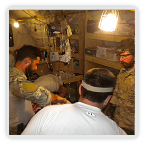

Cas·u·al·ty defined:
[kazh-oo-uhl-tee]
A member of the armed forces lost to service through death, wounds, illness, capture, or because his or her whereabouts or condition cannot be determined.

Care defined:
[kair]
To provide serious attention, support and protection to.
Casualty Care defined at the GBF:
To pay close attention to, support and protect a member of the US Army Special Forces (aka The Green Berets) who has sustained wounds, injuries or illness due to their service to the United States of America. Green Berets are deployed in over 40 countries at any given time in War Time as well as Peace Time.
Seventy-five percent of the GBF’s support is casualty care for Green Berets. Casualty Care support is provided in two forms:
Casualty Care Check (C3):
A $1k check is provided to the Green Beret immediately upon being MEDEVAC’d out of theater to a military treatment facility (MTF) away from their Permanent Duty Station. This $1k check is meant to support with unexpected costs that come with being hospitalized for long periods of time away from home.
Extended Care:
It is often the case that a combination of Army provided medical services and support are just what it takes for recovery and return to duty, or the transition to a civilian career. When more is needed we address those needs on a case-by-case basis, making every effort to accomodate.